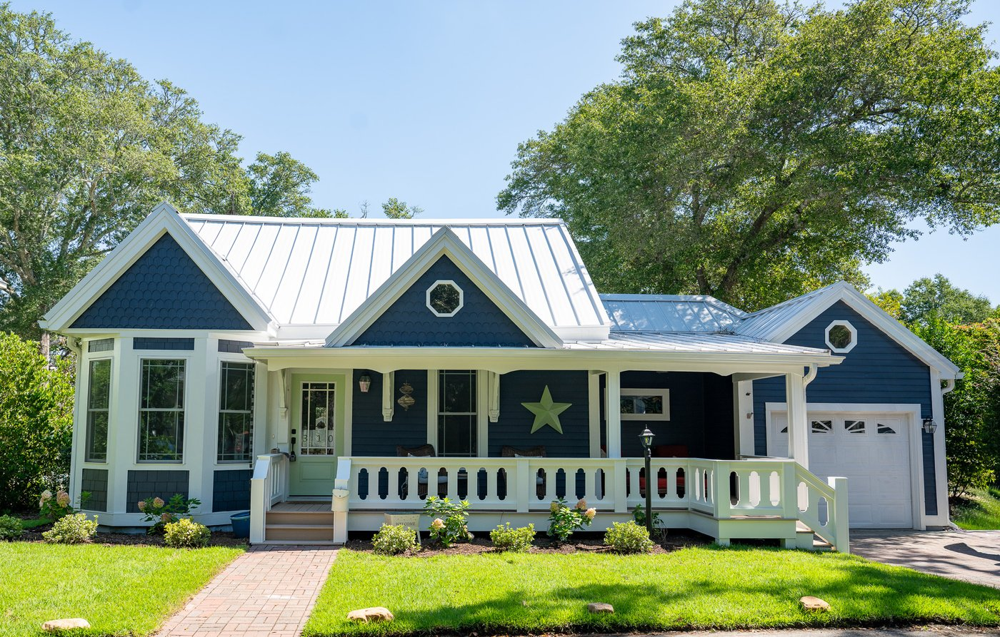

The History of 310 College St. – The Florence Lee Smith House

On a quiet street within Southport’s historic district stands the Florence Lee Smith House, newly named and honored by the Southport Historical Society with a permanent plaque recognizing its historic significance. The house tells the story of four generations of courage, foresight, and devotion, and of a family’s remarkable journey from the Civil War to the mid-20th century, all rooted in this very piece of land.
Origins: Joseph Davis and Fanny Price
The story begins with Joseph Davis, a Cape Fear River pilot born in 1822 in Brunswick County, North Carolina. During the Civil War, Davis risked his life as a Bar Pilot, guiding ships through the Union blockade at the mouth of the Cape Fear. By war’s end, he had both experience and means, and a burgeoning family with Fanny Price, a recently emancipated woman with whom he shared a deep, enduring relationship at a time when interracial marriage was not only socially unacceptable, but illegal.
In 1866, Davis purchased Lot 93 and the northern half of Lot 94 in Smithville (now Southport) for $600. Two years later, in a groundbreaking act of love and protection, he deeded Lot 93 to Fanny and their two young daughters, Anna Terry and Alice B., declaring his gift was made “for the natural love and affection” he bore for them. This deed gave Fanny and her children legal ownership and financial security at a time when few newly-freed families could claim such stability. It was an extraordinary gesture of foresight that would secure the family’s future long after Davis’s death, which occurred just a few weeks later.
A Foundation for the Future
Left alone to raise three daughters, Anna (2), Alice (1), and Josephine (newborn), Fanny safeguarded the property Joseph had entrusted to her. In the decades following the Civil War, she paid taxes, maintained the land, and ensured that her children would inherit not only the deed but also the dignity that came with property ownership.
By 1884, Fanny’s eldest daughter Anna married Moses Lee, a hardworking and enterprising man who soon became a respected member of Southport’s community. Anna and Moses built a home on the property, facing West St. Moses established a grocery on Nash and Howe Streets where he sold produce and chickens. He built a stable on the College St. side of the property and rented horses to locals and visitors. He was active in local politics, serving as a member of the newly formed Republican Party and working at the election polls. He and Anna were devoted members of St. James A.M.E. Zion Church. Together, they raised their only daughter, Florence M. Lee, born in 1887, on the same land first secured by Joseph Davis for his family.Florence’s Legacy Begins
Florence grew up surrounded by examples of resilience and resourcefulness. She witnessed her parents rebuild after a devastating chimney fire and persevere through hardship. By 1907, as a young woman, Florence married and became Florence Lee Smith. That same year, Anna, now widowed, deeded a portion of the family land to her daughter. She was following the example set by her father to legally document property ownership. It was a deliberate act of protection during the Jim Crow era when property ownership could be challenged.
It was on this land, next to her mother’s, that Florence and her husband built their home, which stands to this day. And it was in this home that their only child, a daughter named Mabel, was born in 1910.
The House Through the Generations
The home at 310 College St. that now bears Florence Lee Smith’s name stood as the heart of family life for decades. Within its walls, Florence, Mabel, and their extended family weathered challenges and celebrated triumphs. At one point after becoming a widow, Florence nearly lost the house, but with help from her daughter Mabel and son-in-law Bertram Berry, she was able to save it, a testament to the family’s enduring determination.
Florence passed away in 1954, leaving the home to Mabel, who remained there until she passed away in 1965. Because Mabel and her husband had no children, there were no more descendants to bequeath the property to. Her husband, Bertram Berry, died four years later at the age of 69, ending one hundred years of family ownership.
Enduring Symbolism
This year, the Southport Historical Society is proud to recognize the home’s remarkable story by designating it The Florence Lee Smith House and installing a permanent historical plaque at the site. The plaque honors not just Florence herself but the generations before her: Joseph Davis, whose act of love defied the conventions of his time; Fanny Price, who held the family’s ground through Reconstruction; Anna and Moses Lee, who nurtured their community and passed their legacy forward, and the generation that came after, her daughter Mabel who helped save the home from auction, and continued to care for it after her mother’s passing.
The Florence Lee Smith House stands as more than a historic landmark. It is a monument to perseverance, family, and the enduring strength of love across generations.